Když v červnu 1875 projížděli dva angličtí obchodníci na kánoi kolem Českých Budějovic, nikdo netušil, že se Vltava pod městem stane jedním z míst, kde se budou psát dějiny české kanoistiky. Na úseku mezi Budějovicemi a Prahou se od roku 1922 jezdil legendární 189 kilometrů dlouhý závod a jednou z jeho nejobávanějších překážek byla propust starého jezu v Českém Vrbném. Právě tady, u elektrárny pivovaru Budvar, trénovali v padesátých a šedesátých letech budějovičtí slalomáři. Dynamo tu mělo loděnici ze starého železničního vagonu a mezi těmi, kdo si zdejší šlajsnu vyzkoušeli, byla i mladá Lída Veberová, později Polesná.
Vodní slalom se do jižních Čech dostal v roce 1950 prvním závodem na Plánském jezu. V šedesátých letech už byl region slalomovou velmocí: na Čertových proudech pod Lipnem se v roce 1967 jelo mistrovství světa a Lída Polesná tam před patnácti tisíci diváky vyhrála. O dva roky dříve, v roce 1965, vznikl oddíl kanoistiky TJ Škoda, z něhož se postupně stal dnešní SK Vodní slalom České Budějovice. Založil ho Karel Krejčí po návratu z vojenské Dukly Bechyně a oddíl se od začátku věnoval výhradně slalomu a sjezdu.
Rozhodující impuls přišel v roce 1972. Vodní slalom se poprvé objevil na olympijských hrách a na umělém kanálu v Augsburgu českoslovenští závodníci, zvyklí jen na přírodní řeky, propadli. Bylo jasné, že bez umělé trati se špičkový slalom dělat nedá. V roce 1973 se v oddíle TJ Škoda zrodila myšlenka postavit takovou dráhu v Budějovicích. Následovalo pět let jednání s úřady a ČSTV, při kterých oddílu pomáhala i Lída Polesná jako členka ústředního výboru svazu. Místo pod Slepým ramenem v centru neuspělo kvůli malému spádu; vybrán byl prostor starého jezu v Českém Vrbném, který po narovnání Vltavy zůstal daleko od nového koryta. Stavební povolení bylo vydáno 18. dubna 1978 a hned začala stavba – z velké části rukama samotných členů oddílu, kteří tu odpracovali tisíce brigádnických hodin.
První tréninky na nedokončené trati proběhly v roce 1981. Jako jeden z prvních byl hotový úsek pod starou propustí, které se říkalo Kolovadlo – křest ohněm pro každého, kdo se do něj pustil. Dráha byla oficiálně předána do provozu 1. června 1983 a stala se jednou z nejlepších tréninkových tratí v Československu. Vyrostlo na ní šest seniorských reprezentantů a dva olympionici, mezi nimi Jakub Prüher, který v roce 1992 startoval v Barceloně. Jméno Lídy Polesné nesl areál nejpozději od poloviny devadesátých let.
Po povodni v roce 2002 a třech desetiletích provozu bylo zřejmé, že betonové prahy a Kolovadlo už nestačí. V roce 2008 získal klub podporu z evropských fondů a koncem roku 2009 začaly bagry starou trať bourat. Nový kanál, jehož koncepci navrhl Jakub Prüher, opustil tradiční strouhu s jednotným spádem a napodobil přirozenou řeku: střídání skluzů a lagun, které nepotřebuje přečerpávání, a kolejnice pro mobilní překážky stejného typu jako na olympijské trati v Londýně. Přestavba stála zhruba 26 milionů korun. První voda protekla kanálem 21. prosince 2011 a na jaře 2012 na něm čeští slalomáři bojovali o nominaci na olympijské hry v Londýně.
Od té doby prošly Českým Vrbným mistrovství světa v raftingu juniorů a veteránů (2012), evropské poháry ve slalomu, sjezdu i raftingu, mistrovství Evropy v raftingu (2023) a především mistrovství Evropy juniorů a do 23 let ve vodním slalomu v roce 2022 – první v historii České republiky, kterému předcházela dostavba nové loděnice a zázemí. Na ni přispěla milionem korun i sestra Lídy Polesné. Areál, kde kdysi stál mlýn a kde se bortily skládací kajaky závodníků z Prahy, dnes slouží slalomářům, sjezdařům, raftařům, surfařům na říční vlně i veřejnosti – a dál ho spravuje klub, který ho před půl stoletím vysnil a postavil.
Ze starého alba

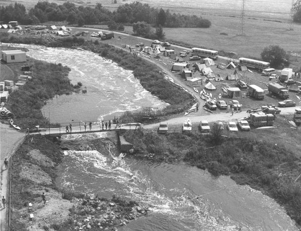

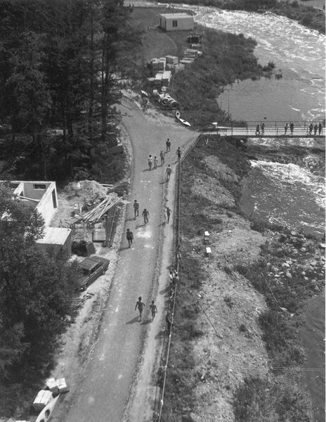

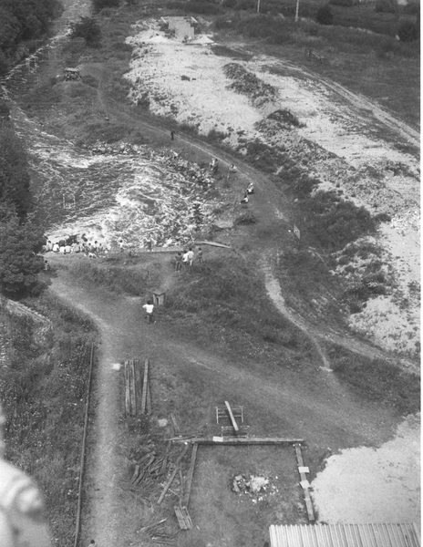

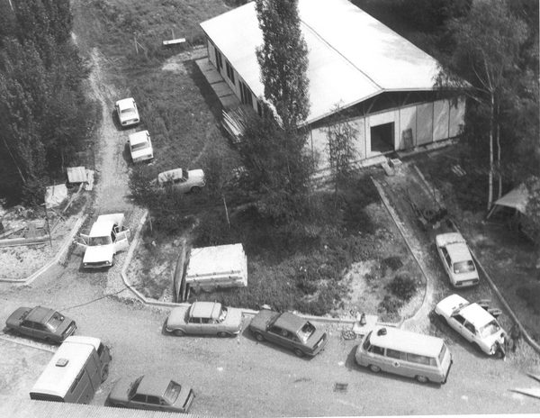

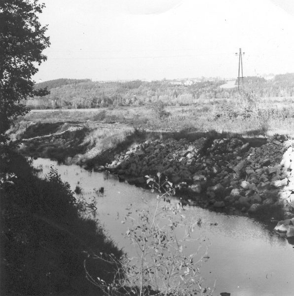

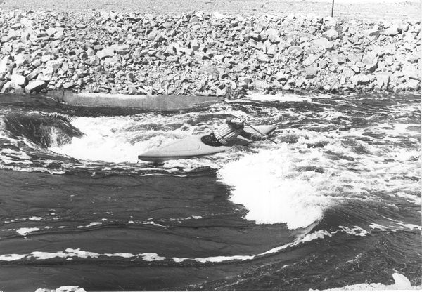

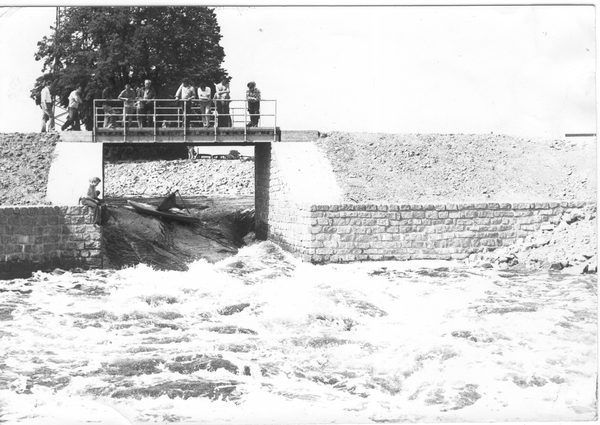

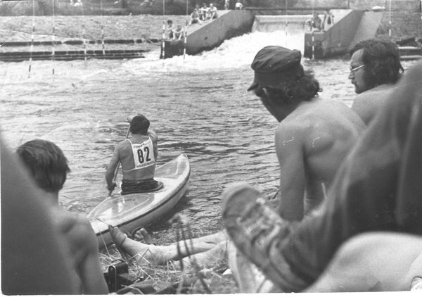

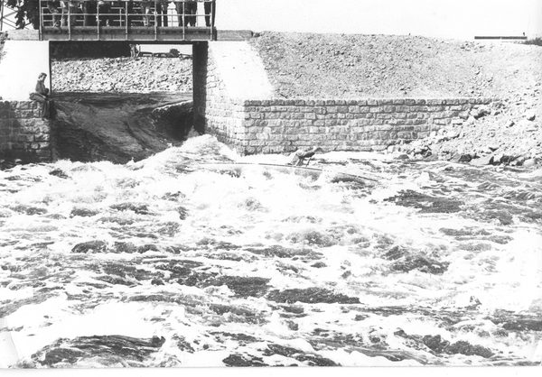

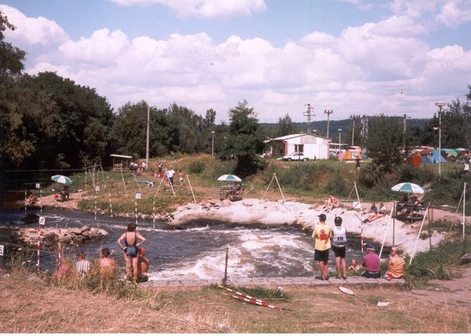

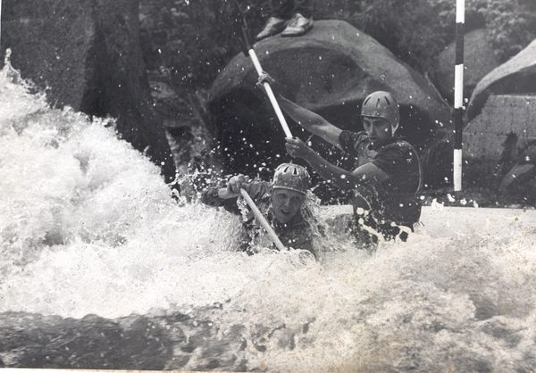

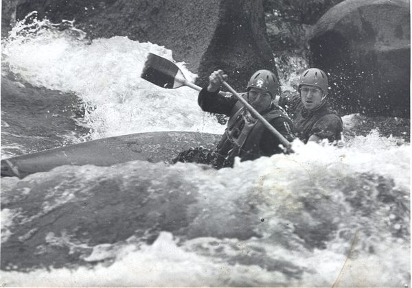

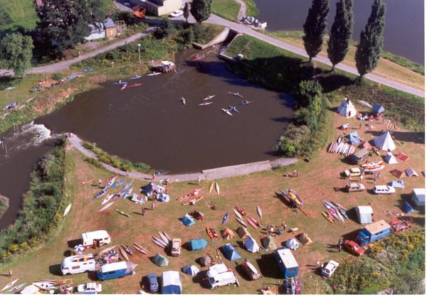

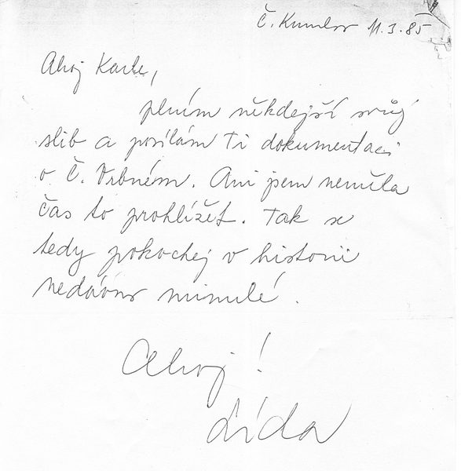

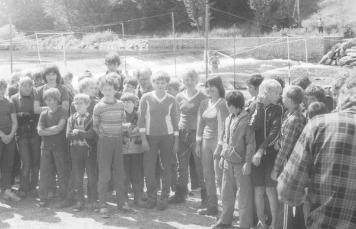

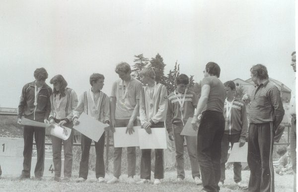
Lída Polesná
Ludmila Polesná (31. 8. 1934 Písek – 9. 12. 1988 Praha), rozená Štyndlová, poprvé provdaná Veberová, patří k největším postavám československé a světové kanoistiky. Ve vodním slalomu v kategorii K1 získala čtyři tituly mistryně světa (1961 Hainsberg, 1963 Spittal, 1967 Lipno, 1969 Bourg-Saint-Maurice), pět stříbrných a dvě bronzové medaile; v roce 1969 vyhrála na MS i sjezd. (Štumbauerova práce uvádí celkem 6 zlatých, 9 stříbrných a 4 bronzové z MS včetně sjezdu a 36 titulů mistryně republiky –.) Startovala na olympijských hrách 1972 v Mnichově (16. místo) a reprezentovala až do svých 41 let. V letech 1962–1964 závodila za Dynamo České Budějovice, poté žila a pracovala na Lipně; v roce 1965 se stala první vítězkou ankety o nejlepšího sportovce Jihočeského kraje. Své vzpomínky sepsala v knize Hranaté medaile (1979). Jako členka ÚV ČSTV podpořila v 70. letech stavbu umělé slalomové dráhy v Českém Vrbném – na propusti starého jezu v tomto místě sama trénovala. Areál dnes nese její jméno.
Časová osa
Počátky kanoistiky v Českých Budějovicích
- 1875 – V červnu propluli angličtí obchodníci Stevens a Bradlley na kánoi z Kaplice přes České Budějovice po Malši a Vltavě směrem k Labi – první doložená kanoistická plavba v regionu, umožněná rok předtím otevřenou železnicí.
- 1910–1912 – Do Budějovic a dál do Prahy připlouvá zakladatel české kanoistiky Josef Rössler-Ořovský; Vltava pod městem se stává oblíbenou vodáckou trasou.
- 1913 – V Českých Budějovicích je doložena pobočka Českého Yacht Klubu (ČYK); 29. 11. 1913 se stává jedním ze tří zakládajících členů Svazu kanoistů Království českého. (Starší datum založení pobočky 1902 považuje Štumbauer za nepravděpodobné –.)
- 1921–1926 – Vznikají oddíly vodních skautů; v roce 1922 se poprvé jede 189 km dlouhý nonstop závod České Budějovice – Praha, v roce 1926 první závod Český Krumlov – České Budějovice (předchůdce Jihočeského vodáckého maratonu).
- 1922 – Na jezu v Českém Vrbném nahrazuje Fellingerův mlýn hydroelektrárna Českého akciového pivovaru (Budvar). Propust tohoto jezu – pozdější „Kolovadlo“ – je jedním z nejobávanějších jezů závodu České Budějovice – Praha (výška 2,24 m, čtvrtý nejvyšší na trati).
- 1928–1933 – Obnova ČYK, požár loděnice na Žitném mlýně (1929), stavba nové klubovny na Střeleckém ostrově (1933); 1932 vzniká kanoistický odbor Sokola I.
- 1930 – První Jihočeský vodácký maraton (42,2 km, 8 jezů).
- 1941–1942 – Okupace: Sokol zrušen, ČYK zaniká a jeho členové přecházejí pod Klub českých turistů.
Poválečné oddíly a první slalom
- 1948 – Obnoven závod České Budějovice – Praha i Jihočeský maraton. Založen kanoistický oddíl Dynamo (původně ZSJ Sokol JČE, předseda Viktor Novák).
- 1950 – Dynamo pořádá na Plánském jezu první závod ve vodním slalomu v jižních Čechách. Vznikají oddíly Koh-i-noor (později Tatran) a Lokomotiva; 1951 Motor, 1955 Rudá hvězda.
- 50. a 60. léta – Budějovičtí slalomáři (včetně Lídy Polesné) trénují na propusti starého jezu v Českém Vrbném; v kanálu pod elektrárnou je vytyčena tréninková trať a Dynamo má na ostrově improvizovanou loděnici ze starého železničního vagonu.
- 1957–1958 – Dvojice Polesný – Fuka (Dynamo) vítězí v C2 v jubilejním 25. ročníku závodu České Budějovice – Praha a vítězství o rok později obhajuje. Zdeněk Matějovský startuje na MS v Augsburgu (6. místo F1).
- 1959 – Naposledy se jede závod České Budějovice – Praha (1922–1959, celkem 27 ročníků).
- 1961 – Lída Veberová (později Polesná) získává první titul mistryně světa ve slalomu K1 (Hainsberg u Drážďan). Milan Polesný bere stříbro na MČSSR ve sjezdu C1.
- 1962 – Lída Veberová přichází do oddílu Dynamo České Budějovice; hned v první sezoně vítězí v oddílových žebříčcích, získává titul mistryně ČSSR ve sjezdu a šest mezinárodních vítězství.
- 1963 – Druhý světový titul Lídy Veberové (Spittal, naposledy vypsaná kategorie F1 – skládací kajak). Dynamo staví svépomocí 7 laminátových lodí.
- 1964 – Lída Veberová a Milan Polesný odcházejí z Dynama a stěhují se na Lipno.
- 1965 – Založen oddíl kanoistiky TJ Škoda České Budějovice – přímý předchůdce dnešního SK Vodní slalom. Popud dal Karel Krejčí po návratu z Dukly Bechyně; prvním předsedou byl Václav Jirásek. Oddíl se od začátku orientuje na slalom a sjezd a sídlí v loděnici na levém břehu Malše mezi železným a železničním mostem.
- 1966 – Oddíl Stadion pořádá první slalomový závod v Českém Vrbném (cca 300 lodí).
- 1967 – Na Čertových proudech pod Lipnem se koná MS ve vodním slalomu (227 závodníků ze 14 zemí, 15 000 diváků); Lída Polesná zde vítězí v K1.
- 1969 – Lída Polesná vítězí na MS v Bourg-Saint-Maurice ve slalomu i sjezdu – vrchol její kariéry.
- 1970 – Předsedou oddílu TJ Škoda zvolen Karel Krejčí, „duše oddílu“ na několik desetiletí.
- 1972 – Vodní slalom poprvé na olympijských hrách (Mnichov/Augsburg); Lída Polesná startuje v K1 (16. místo). Neúspěch čs. slalomářů na umělém kanálu spouští v Československu výstavbu umělých drah.
- 1973 – V oddíle TJ Škoda se rodí myšlenka postavit umělou slalomovou dráhu v Českých Budějovicích. Oddíl se zároveň stává pravidelným pořadatelem mistrovství ČSSR ve slalomu a sjezdu na Lipně. Dvojice Částa – Königsmark je mistrem ČSSR v C2 sjezd (1974 první v celostátním žebříčku, titul mistr sportu).
Původní umělá slalomová dráha (1978–2009)
- 1973–1978 – Studie a projekt dráhy. Původní návrh pod Slepým ramenem v centru města je zamítnut pro malý spád; vítězí lokalita bývalého jezu v Českém Vrbném, uvolněná narovnáním Vltavy v 60. letech (dokončeno 1968). Jednání s úřady a ČSTV podporuje Lída Polesná jako členka ÚV ČSTV.
- 18. 4. 1978 – Vydáno stavební povolení; téhož roku začíná stavba, z velké části brigádnicky členy oddílu (tisíce odpracovaných hodin na trati, loděnici, ubytovně i zázemí).
- 1981 – Oddíl TJ Škoda začíná trénovat na nedokončené trati; jako jeden z prvních úseků je hotové obávané Kolovadlo – propust starého jezu.
- 1982 – Trenérem se stává Otto Částa; oddíl má kolem 15 stálých závodníků.
- 1. 6. 1983 – Umělá slalomová dráha v Českém Vrbném oficiálně předána do provozu. Horní úsek cca 350 m s pěti betonovými prahy a start v 50m bazénu, pod Kolovadlem dalších cca 250 m zpět do Vltavy; obtížnost WW2–WW4 podle vpouštěné vody. Jedna ze tří nových čs. drah otevřených do roku 1985 (vedle Trnávky 1984 a Veltrus 1985).
- 1984 – Trénink budějovických slalomářů probíhá již prakticky jen v Českém Vrbném; k nejlepším patří Königsmark, Prüher, Krejčová, Hajná a bratři Benhákové (čs. špička C2). Oddíl je druhý v ČSSR dorostu ve sjezdu.
- 1985 – II. ročník Českobudějovického slalomu na USD, oddíl má 18 závodníků; Jakub Prüher zařazen do seniorské reprezentace. (Článek Štumbauer & Štumbauer 2017 uvádí, že se v Českém Vrbném jelo i mistrovství ČSSR 1985; diplomová práce je klade na Lipno –.)
- Od 2. pol. 80. let – Voda ve Vltavě je výrazně čistší, zlepšuje se vybavenost areálu. Na původní dráze vyrostlo šest seniorských reprezentantů, z nich dva olympionici.
- 1992 – Jakub Prüher startuje v C1 na OH v Barceloně (29. místo) – první olympijské hry s vodním slalomem po dvaceti letech.
- Začátek 90. let – Oddíl kanoistiky TJ Škoda se osamostatňuje jako Sportovní klub vodní slalom České Budějovice (IČO 15770729).
- 1995 – Klub vydává brožuru „Vodácké centrum Lídy Polesné České Budějovice – České Vrbné“ – název po Lídě Polesné je tedy používán nejpozději od poloviny 90. let, ne až od přestavby.
- 2000 – Tomáš Kobes jako druhý jihočeský slalomář startuje na OH (Sydney).
- 2002 – Srpnová povodeň vážně poškozuje umělé dráhy na Vltavě a Labi včetně Českého Vrbného; areál je po opravě znovu zprovozněn.
- 2007–2008 – Příprava revitalizace: hydraulický model trati v měřítku 1:15 na ČVUT v Praze; 2008 rozhodnuto o stavbě po přiznání dotace z EU (ROP Jihozápad).
- 2009 – Mezinárodní vodácký festival Wave (opakovaně i v dalších letech, 2014 spojený s ECA Junior Cupem). Koncem roku 2009 začíná demolice staré dráhy – včetně betonového Kolovadla.
Revitalizace a Vodácký areál Lídy Polesné (2009–dnes)
- 2009–2012 – Projekt revitalizace s rozpočtem 29,7 mil. Kč ve třech etapách: I. etapa (cca 26 mil. Kč) – přestavba vlastního kanálu, hlavní stavební práce v roce 2011; II. etapa – nová loděnice (odhad 13 mil. Kč); III. etapa – další zázemí. Financováno převážně z ROP Jihozápad a částečně městem České Budějovice. Hlavním iniciátorem a autorem koncepce je předseda klubu Jakub Prüher: členité koryto skluzů a lagun po vzoru přirozených řek, bez energeticky náročného přečerpávání, s kolejnicemi pro mobilní překážky RapidBlocs (stejná technologie jako na olympijském kanálu v Londýně 2012).
- 2008–2011 – V těsném sousedství vzniká v rámci splavnění Vltavy plavební komora a ochranný přístav Marina České Vrbné.
- 21. 12. 2011 – Po cca 730 dnech čekání první „průplach“ nového kanálu při výroční schůzi klubu.
- Jaro 2012 – Dokončení stavby (duben 2012) a otevření nové trati, rozdělené na část pro začátečníky a mládež, tréninkovou část a závodní úsek s mobilními překážkami. Koncem dubna 2012 se zde jede závěrečný závod nominace českých slalomářů na OH v Londýně.
- 24.–26. 8. 2012 – Mistrovství světa v raftingu juniorů a veteránů; Češi získávají čtyři zlaté hned v úvodních sprintech.
- 2014 – Wave 2014 & ECA Slalom Junior Cup – evropský pohár juniorů ve slalomu.
- 2016 – Deník píše, že areál „vyrostl do krásy“; zájem o sport od otevření nového kanálu výrazně roste.
- 2017 – Evropský a Český pohár v raftingu (12.–13. 8.) a evropský pohár ve sjezdu na divoké vodě; v areálu vzniká infopoint Vltavské vodní cesty, přesouvá se sem cyklostezka.
- 2019 – Zastupitelstvo města schvaluje dotaci 3,9 mil. Kč na dostavbu zázemí (loděnice, terénní úpravy, klubovna). Sestra Lídy Polesné, paní Valová, věnuje klubu 1 mil. Kč na novou restauraci. Začíná demolice staré loděnice; poprvé v historii klubu má vzniknout šatna s WC.
- 2020 – První stupeň kanálu upraven pro surfaře na říční vlně. Dokončení nového zázemí (loděnice, klubovna, bufet s pergolou) probíhá v letech 2019–2022 s cílem pořádat MEJ 2022.
- 23.–25. 7. 2021 – ICF World Ranking Race (WRR 2021) ve slalomu včetně extrémního slalomu (otevřené MČR). V září ECA European Cup ve sprintu na divoké vodě (8 zemí).
- 9.–14. 8. 2022 – Mistrovství Evropy juniorů a do 23 let ve vodním slalomu (ECA) – poprvé v historii v České republice; 20 medailových disciplín, Česko vítězí v medailové tabulce (8–5–0). Ředitelem závodu je Jakub Bican, pořadatelem SK Vodní slalom ČB.
- 2023 – Mistrovství Evropy v raftingu (21.–26. 8., slalom v Českém Vrbném, sjezd z Vyššího Brodu a Loučovic) a závody Světového poháru a evropského poháru ve sprintu na divoké vodě (začátek září).
- 30. 8. – 1. 9. 2024 – ICF Wildwater Sprint Pre-World Championship (generálka na MS ve sprintu).
- 28.–30. 8. 2026 – Český pohár ve sprintu, MČR veteránů, MČR družstev, ČP juniorů a žáků a 5. PEU Cup – pořadatel SK Vodní slalom České Budějovice (ředitel závodu Oldřich Weber).
Prameny
- Štumbauer, P. (2017): Historie vodáckého areálu Lídy Polesné v Českém Vrbném. Diplomová práce, Pedagogická fakulta JU v Českých Budějovicích. dspace.jcu.cz
- Štumbauer, J. & Štumbauer, P. (2017): Historie českobudějovické kanoistiky od jejích počátků do poloviny 80. let 20. století. Studia Kinanthropologica 18(2). PDF
- Polesná, L. (1979): Hranaté medaile. Jihočeské nakladatelství.
- Vodácký areál Lídy Polesné – Wikipedie, Ludmila Polesná – Wikipedie, dobový tisk a klubový archiv.